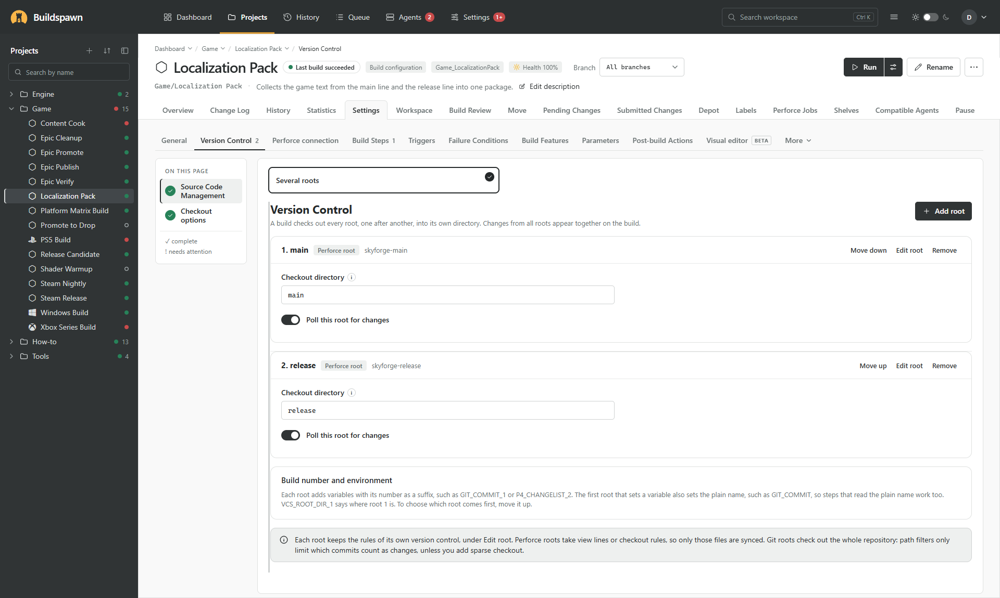

Several roots
Check out more than one repository or depot in one build, each into its own folder.
When to use it
Use it when a build needs code from more than one place: the game in Perforce and a tools repository in Git, or two Perforce roots such as game and engine. A root is one repository or depot a build checks out.
How to set it up
- Open the build configuration and go to Settings › Version Control.
- Choose Several roots. Your present root moves into a card named
root1. A yellow note reminds you that build steps now find its files inroot1/, for exampleroot1/build.sh. Files already at the top of the workspace are not deleted. - Click Add root to add a card.
- On each card click Edit root and choose the Version control (Git, Perforce Software or Perforce root), then fill in its settings.
- Set the Checkout directory of each card. Use Move up and Move down to set the order.
- Click Save.

To go back to one root, remove cards until one is left. The build configuration then keeps that root at the top of the workspace and the directory is dropped.
Every field of a root card
| Field | What it does | Default | Example |
|---|---|---|---|
| Name | The name of the root in the lists. Under Edit root. | The version control type, or the directory | Engine |
| Version control | The kind of root. Under Edit root. | Git | |
| Checkout directory | Relative to the workspace. Each root needs its own folder, not inside another root. | root1 for the moved root | tools |
| Poll this root for changes | Whether a change in this root starts a build. | On | On |
| Move up, Move down, Edit root, Remove | Order, edit the root's own settings, or delete the card. |
Each root keeps the rules of its own version control. Perforce roots take view lines or checkout rules, so only those files are synced. Git roots check out the whole repository: path filters only limit which commits count as changes, unless you add sparse checkout.
Variables of several roots
- Each root adds its variables with its number at the end:
GIT_COMMIT_1,P4_CHANGELIST_2. The first root that sets a variable also sets the plain name, such asGIT_COMMIT, so steps that read the plain name still work. VCS_ROOT_DIR_1,VCS_ROOT_DIR_2, … say where each root is. Put the root you want to be "first" at the top.- With two Perforce roots, each gets its own workspace. Add something to the name, for example
-root2. - Changes are grouped by root, and the build page shows all roots together. You can view changes by time or by root. A change in one root starts a build without noise from the others.
Two branches of the same Git repository as two roots of one build configuration are not supported. Use one root and fetch the second branch in a step, or use two build configurations.
With several Perforce roots, unshelving uses the first Perforce root and the label feature labels the last one. Choose the root in the VCS labeling feature.
A worked example
The Skyforge build checks out the game from Perforce into game and the shared tools from Git into tools.
Root 1, Perforce root skyforge-main | Checkout directory game |
Root 2, Git https://git.studio.example/skyforge/tools.git, */main | Checkout directory tools |
A PowerShell step runs tools\pack.ps1 -Source game -Changelist $env:P4_CHANGELIST.
What you see when it runs
The log shows each root being checked out in turn. The build page lists the changes of both roots, with the root name on each change.
Problems and fixes
| You see | What to do |
|---|---|
| Steps cannot find files after adding a second root | The files moved to the root's directory. Change the step paths, for example root1/build.sh. |
| A message that a directory is not allowed | A directory must be relative, and not inside another root's directory. |
| Both Perforce roots fight over a workspace | Each root needs its own client; add something to one of the names. |